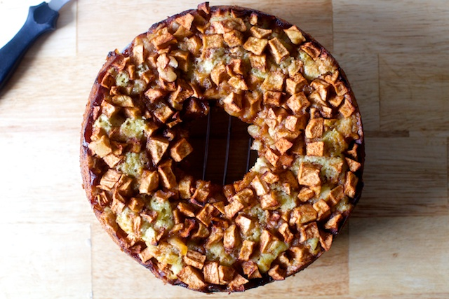

Ingredients:
- For the apples:
- 6 apples (Mom uses McIntosh, but any apples will do)
- 1 tablespoon ground cinnamon
- 5 tablespoons (65 grams) granulated sugar
- For the cake:
- 2 3/4 cups (360 grams) all-purpose flour
- 1 tablespoon baking powder
- 1 teaspoon fine sea or table salt
- 1 cup (235 ml) vegetable oil (safflower, sunflower, olive, or coconut oil also work)
- 2 cups (400 grams) granulated sugar
- 1/4 cup (60 ml) orange juice
- 2 1/2 teaspoons vanilla extract
- 4 large eggs
- 1 cup (130 grams) walnuts, chopped (optional)
Instructions:
- Preheat the oven to 350°F (175°C) and grease a tube pan.
- Peel, core, and chop the apples into 1-inch chunks. Toss with cinnamon and sugar and set aside.
- In a large mixing bowl, stir together the flour, baking powder, and salt.
- In a separate bowl, whisk together the oil, orange juice, sugar, vanilla, and eggs.
- Mix the wet ingredients into the dry ingredients and scrape down the sides to ensure everything is incorporated.
- Pour half of the batter into the prepared pan and spread half of the apples (and their juices) over it. Pour the remaining batter over the apples and arrange the remaining apples on top.
- Bake for about 1 1/2 hours or until a tester comes out clean.
- Cool completely before running a knife between the cake and pan, and unmolding onto a platter.
- Tip: To avoid uncooked batter near the apples, make sure your tester goes deep enough to check the batter below the top layer of apples.
Back to Homepage